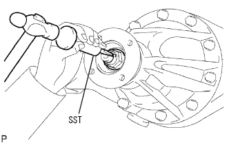
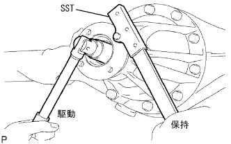
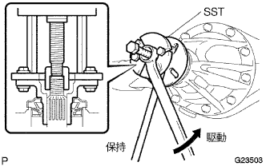
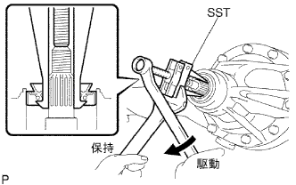
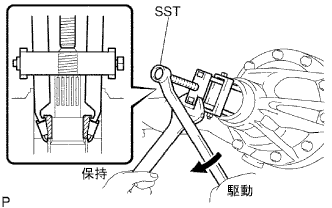

リヤディファレンシャル キャリア オイルシール（4WD） 取り外し |
| 1. ディファレンシャルオイル抜き取り |
リヤアクスルハウジングフィラプラグ、リヤアクスルハウジングドレーンプラグおよび各ガスケットを取りはずしてオイルを抜き取る。
新品のガスケットを介して、リヤアクスルハウジングドレーンプラグを取り付ける。
| 2. プロペラシヤフトASSY RR取りはずし |
 |
図の箇所に合わせマークをつけ、ボルト４本、ワッシャおよびナット各４個をはずし、プロペラシャフトASSY RR をディファレンシャルフランジから切り離す。
 |
 |
図の箇所に合わせマークをつけ、ボルト４本、ワッシャおよびナット各４個をはずし、インタミディエイトシャフトASSY をプロペラシャフトASSY RR から切り離す。
| 3. リヤ ドライブピニオン ナット取りはずし |
|  |
SSTおよびハンマーを使用して、リヤドライブピニオンナットのかしめを解く。
|  |
SSTを使用してフランジを固定し、ディープソケットレンチ(24mm)を使用してリヤドライブピニオンナットを取りはずす。
| 4. リヤ ドライブピニオン コンパニオンフランジ RR取りはずし |
|  |
SSTを使用して、リヤドライブピニオンコンパニオンフランジを取りはずす。
| 5. リヤディファレンシャル キャリア オイルシール取りはずし |
|  |
SSTを使用して、リヤディファレンシャルキャリアオイルシールを取りはずす。
| 6. リヤディファレンシャル ドライブピニオン オイルスリンガ取りはずし |
リヤディファレンシャル ドライブピニオン オイルスリンガを取りはずす。
| 7. リヤドライブ ピニオン テーパードローラベアリング FR取りはずし |
|  |
SSTを使用して、リヤドライブピニオンテーパードローラベアリングFRをリヤディファレンシャルキャリアから取りはずす。
| 8. リヤディファレンシャル ドライブピニオン ベアリング スペーサ取りはずし |
リヤディファレンシャル ドライブピニオン ベアリング スペーサを取りはずす。